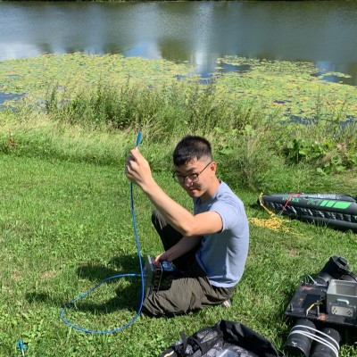
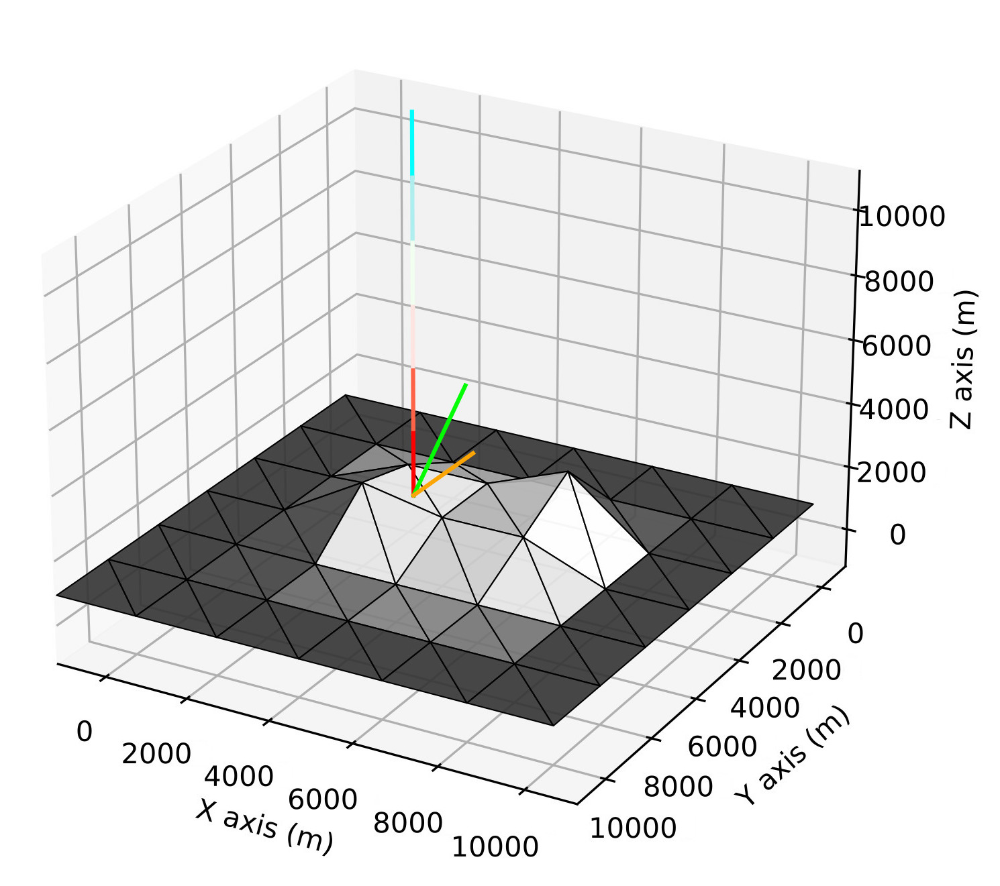
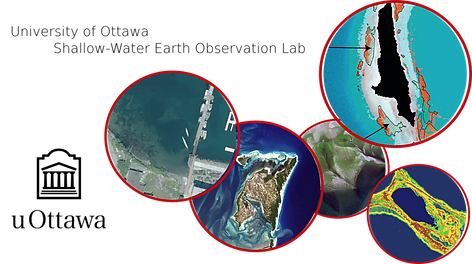

Yulun Wu
Intro | Links | Research | Fieldwork | Hobbies | Contact
Website last updated in February 2025 – please see CV for recent updates.
Intro

Hi! I’m a recent graduate of the Shallow Water Earth Observation Lab at the University of Ottawa, where I studied atmospheric correction for satellite-based aquatic remote sensing over coastal and inland waters. My current goals are to deepen my understanding of radiative transfer in ocean-atmosphere systems and collect more in situ radiometric and water-quality data in lakes and rivers across Ontario and British Columbia, Canada.
Modelling and correcting for the adjacency effect
My PhD thesis focused on the adjacency effect and how it affects water’s top-of-atmosphere radiance. The adjacency effect describes the contribution of land towards water’s colour seen from space, and I address this with a 3D Monte Carlo radiative transfer code that I developed. This work substantially improved satellite-based retrieval of water-leaving reflectance in nearshore environments (Wu et al., 2024).

Figure 1. A photon interacting with a triangulated surface in T-Mart. The photon travels from the blue end to the red end of the vertical line, colliding with the triangulated pixel below. The green line represents the surface normal of the triangle. The orange line is the sampled direction of the photon’s next movement.
Fieldwork

Figure 2. Collecting remote-sensing reflectance of water following a skylight-blocked approach and measuring water quality parameters using an EXO3 sonde in the South Nation River, Ottawa, Ontario.
Hobbies
I love playing basketball and reading science fiction in my free time.
Contact
Email: yulun.wu [at] uottawa.ca | yulunwu8 [at] gmail.com
